용접기사 (2020-08-22 기출문제)
1과목: 기계제작법
1. 액체 호닝의 설명으로 옳은 것은?
- 숫돌을 진동시키면서 가공물을 완성 가공하는 방법이다.
- 혼(hone)에 회전 및 직선왕복 운동을 주어 가공하는 방법이다.
- 랩과 일감 사이에 랩제를 넣어 서로 누르고 비비면서 다듬는 방법이다.
- 물(가공액)과 혼합된 연삭입자를 압축공기로 고속 분사시켜 매끈하게 다듬질하는 방법이다.
(정답률: 77%)

2. 절삭저항을 3분력으로 분해할 때 주분력 P1, 이송분력 P2, 배분력 P3 으로 구분할 때, 크기 비교로 옳은 것은? (단, 공구는 초경바이트, 피삭재는 저탄소강, 절삭 깊이는 노즈 반지름 이내로 가공할 때이다.)
- P2 ＞ P1 ＞ P3
- P3 ＞ P1 ＞ P2
- P1 ＞ P3 ＞ P2
- P3 ＞ P2 ＞ P1
(정답률: 86%)
3. ɣ철에 탄소가 최대 2.11% 고용된 ɣ고용체로서, 실온에서는 존재하기 어려운 조직으로 인성이 크고 상자성체인 강의 표준조직은?
- 오스테나이트
- 마텐자이트
- 소르바이트
- 트루스타이트
(정답률: 39%)
4. 다음 중 물리적 표면경화법인 것은?
- 침탄법
- 질화법
- 청화법
- 화염담금질법
(정답률: 54%)
5. 다음 중 열간가공에 대한 설명으로 가장 적절한 것은?
- 재결정온도 이상에서 가공하는 것이다.
- 용융온도 이상에서 가공하는 것이다.
- 템퍼링온도 이상에서 가공하는 것이다.
- 어닐링온도 이상에서 가공하는 것이다.
(정답률: 65%)
6. 구성 인선(Built-up Edge)의 방지대책으로 틀린 것은?
- 윤활유를 공급한다.
- 절삭속도를 느리게 한다.
- 공구인선을 예리하게 한다.
- 바이트의 경사각을 크게 한다.
(정답률: 74%)
7. 슈퍼 피니싱 (super finishing)에 관한 설명으로 틀린 것은?
- 숫돌을 진동시키면서 가공물을 가공하는 방법이다.
- 가공면은 매끈하고 방향성이 있으며 또한 가공에 의한 표면의 변질층이 매우 크다.
- 원통형의 외면, 내면, 평면 등의 가공에 쓰이고, 특히 중요한 축의 베어링 접촉부 및 각종 게이지의 가공에 사용된다.
- 입도가 작고, 연한 숫돌 입자를 낮은 압력으로 가공물의 표면에 가압하면서 매끈한 표면으로 가공한다.
(정답률: 67%)
8. 커플링으로 연결된 CNC공작기계의 볼 스크류 피치가 6 mm, 서보 모터의 회전 각도가 270°일 때 테이블의 이동 거리는 몇 mm인가?
- 1.5
- 2.5
- 3.5
- 4.5
(정답률: 32%)
9. 스폿 용접과 같은 원리로 접합할 모재의 한쪽판에 돌기를 만들어 고정전극 위에 겹쳐놓고 가동전극으로 통전과 동시에 가압하여 저항열로 가열된 돌기를 접합시키는 용접법은?
- 단접
- 업셋 용접
- 프로젝션 용접
- 플래시 버트 용접
(정답률: 55%)
10. 주조 작업에서 원형 제작 시 고려해야 할 사항이 아닌 것은?
- 구배량
- 수축 여유
- 가공 여유
- 스프링 백
(정답률: 69%)
11. 선반에서 테이퍼 절삭 방법 중 틀린 것은?
- 테이퍼 절삭장치를 이용하는 방법
- 복식 공구대를 이용하는 방법
- 돌림판과 돌리개를 이용하는 방법
- 심압대를 편위시키는 방법
(정답률: 70%)
12. CNC공작기계와 산업용 로봇, 자동반송시스템, 자동화 창고 등을 총괄하여 중앙의 컴퓨터로 제어하면서 공급에서부터 가공, 조립, 출고까지 제조공정을 중앙에서 관리하는 유연생산시스템은?
- FMS
- AMS
- DNC
- 서보기구
(정답률: 69%)
13. 호칭 치수가 200 mm인 사인바를 이용하여 각도를 측정한 결과 사인바 양단의 게이지블록 높이가 각각 30 mm, 17 mm이었다면 측정물의 각도는 약 얼마인가?
- 1.86°
- 3.73°
- 4.88°
- 8.63°
(정답률: 54%)
14. 서보제어방식 중 아래 그림과 같이 모터에 내장된 펄스 제너레이터에서 속도를 검출하고, 엔코더에서 위치를 검출하여 피드백하는 제어방식은?
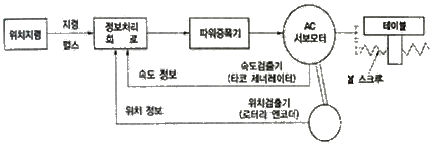
- 개방회로 방식
- 복합회로 방식
- 폐쇄회로 방식
- 반 폐쇄회로 방식
(정답률: 50%)
15. 재료에 금긋기 작업을 할 때 필요한 공구가 아닌 것은?
- 탭
- 펀치
- 정반
- 서피스게이지
(정답률: 69%)
16. 아크 용접봉에서 피복제의 역할이 아닌 것은?
- 아크를 안정시킨다.
- 스패터의 발생을 촉진시킨다.
- 용착금속에 필요한 원소를 공급한다.
- 용착 금속의 급랭을 방지한다.
(정답률: 72%)
17. 표면이 서로 다른 모양으로 조각된 1쌍의 다이를 이용하며 메달, 주화 등을 가공하는 방법은?
- 벌징
- 코이닝
- 스피닝
- 엠보싱
(정답률: 67%)
18. 연강의 절삭작업에서 칩이 경사면 위를 연속적으로 원활하게 흘러나가는 모양으로, 연속 칩이라고도 하며 다음 중 매끄러운 가공표면을 얻을 수 있는 칩의 형태는?
- 유동형
- 열단형
- 전단형
- 균열형
(정답률: 63%)
19. 주물 결함 중 모양 치수 불량 결함의 직접적인 원인으로 틀린 것은?
- 다듬질 여유 부족
- 코어의 이동
- 주물 두께의 불균일
- 목형을 뽑을 때의 흔들림
(정답률: 47%)
20. 전해연마의 특징에 대한 설명 중 틀린 것은?
- 가공 면에 방향성이 없다.
- 복잡한 형상도 연마가 가능하다.
- 탄소량이 많은 강일수록 연마가 용이하다.
- 가공변질 층이 나타나지 않으므로 평활한 면을 얻을 수 있다.
(정답률: 74%)
2과목: 재료역학
21. 그림과 같은 단주에서 편심거리 e에 압축하중 P=80kN이 작용할 때 단면에 인장응력이 생기지 않기 위한 e의 한계는 몇 cm인가? (단, G는 편심 하중이 작용하는 단주 끝단의 평면상 위치를 의미한다.)
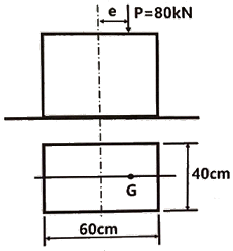
- 8
- 10
- 12
- 14
(정답률: 50%)
22. 길이가 5m이고 직경이 0.1m인 양단고정보중앙에 200 N의 집중하중이 작용할 경우 보의 중앙에서의 처짐은 약 몇 m인가? (단, 보의 세로탄성계수는 200 GPa이다.)
- 2.36×10-5
- 1.33×10-4
- 4.58×10-4
- 1.06×10-3
(정답률: 74%)
23. 다음 구조물에 하중 P=1kN이 작용할 때 연결핀에 걸리는 전단응력은 약 얼마인가? (단, 연결핀의 지름은 5mm이다.)
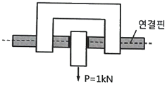
- 25.46kPa
- 50.92kPa
- 25.46MPa
- 50.92MPa
(정답률: 44%)
24. 다음과 같이 스팬(span) 중앙에 힌지 (hinge)를 가진 보의 최대 굽힘모멘트는 얼마인가?
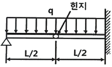
- qL2/4
- qL2/6
- qL2/8
- qL2/12
(정답률: 29%)
25. 그림과 같이 원형단면을 가진 보가 인장하중 P=90kN을 받는다. 이 보는 강(steel)으로 이루어져 있고, 세로탄성계수는 210GPa이며 포와송비 μ=1/3이다. 이 보의 체적변화 △V는 약 몇 ㎣인가? (단, 보의 직경 d=30mm, 길이 L=5m이다.)
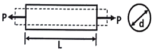
- 114.28
- 314.28
- 514.28
- 714.28
(정답률: 25%)
26. 그림과 같이 균일단면을 가진 단순보에 균일하중 ωkN/m이 작용할 때, 이 보의 탄성곡선식은? (단, 보의 굽힘 강성 EI는 일정하고, 자중은 무시한다.)
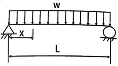
- y = (ωx/24EI)(L3-2Lx2+x3)
- y = (ωx/24EI)(L3-Lx2+x3)
- y = (ωx/24EI)(L3x-Lx2+x3)
- y = (ωx/24EI)(L3-2x2+x3)
(정답률: 36%)
27. 그림과 같이 외팔보의 끝에 집중하중 P가 작용할 때 자유단에서의 처짐각 θ는? (단, 보의 굽힘강성 EI는 일정하다.)
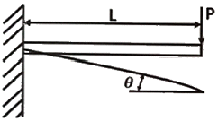
- PL2/2EI
- PL2/6EI
- PL2/8EI
- PL2/12EI
(정답률: 39%)
28. 길이 3m, 단면의 지름이 3cm인 균일 단면의 알루미늄 봉이 있다. 이 봉에 인장하중 20kN이 걸리면 봉은 약 몇 cm 늘어나는가? (단, 세로탄성계수는 72GPa이다.)
- 0.118
- 0.239
- 1.18
- 2.39
(정답률: 58%)
29. 100rpm으로 30kW를 전달시키는 길이 1m, 지름 7cm인 둥근 축단의 비틀림각은 약 몇 rad인가? (단, 전단탄성계수는 83GPa이다.)
- 0.26
- 0.30
- 0.015
- 0.009
(정답률: 58%)
30. 그림과 같은 단순 지지보에 모멘트(M)와 균일분포하중(w)이 작용할 때, A점의 반력은?
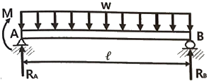
- wℓ/2 - M/ℓ
- wℓ/2 - M
- wℓ/2 + M
- wℓ/2 + M/ℓ
(정답률: 43%)
31. 비틀림모멘트 2kNㆍm가 지름 50mm인 축에 작용하고 있다. 축의 길이가 2m일 때 축의 비틀림각은 약 몇 rad인가? (단, 축의 전단탄성계수는 85GPa이다.)
- 0.019
- 0.028
- 0.⑤4
- 0.077
(정답률: 39%)
32. 길이 10m, 단면적 2cm2인 철봉을 100°C에서 그림과 같이 양단을 고정했다. 이 봉의 온도가 20°C로 되었을 때 인장력은 약 몇 kN인가? (단, 세로탄성계수는 200GPa, 선팽창계수 α=0.000012/°C이다.)
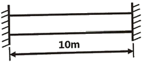
- 19.2
- 25.5
- 38.4
- 48.5
(정답률: 36%)
33. 그림과 같은 돌출보에서 ω=120kN/m의 등분포 하중이 작용할 때, 중앙 부분에서의 최대 굽힘응력은 약 몇 MPa인가? (단, 단면은 표준 I형 보로 높이 h=60cm이고, 단면 2차 모멘트 I=98200cm4이다.)
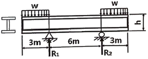
- 125
- 165
- 185
- 195
(정답률: 32%)
34. 다음과 같은 평면응력 상태에서 최대 주응력 σ1은?
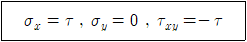
- 1.414τ
- 1.80τ
- 1.618τ
- 2.828τ
(정답률: 39%)
35. 0.4m×0.4m인 정사각형 ABCD를 아래 그림에 나타내었다. 하중을 가한 후의 변형상태는 점선으로 나타내었다. 이때 A지점에서 전단 변형률 성분의 평균값(γxy)는?
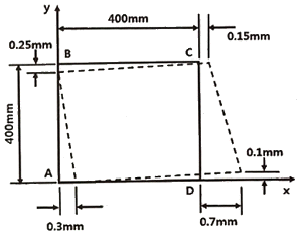
- 0.001
- 0.000625
- -0.00⑤
- -0.000625
(정답률: 32%)
36. 다음 그림과 같은 부채꼴의 도심(centroid)의 위치
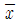
는?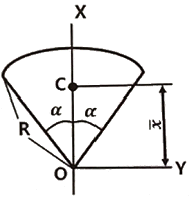
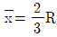
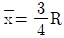
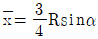
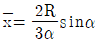
(정답률: 43%)
37. 그림과 같이 800 N의 힘이 브래킷의 A에 작용하고 있다. 이 힘의 점 B에 대한 모멘트는 약 몇 Nㆍm인가?
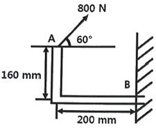
- 160.6
- 202.6
- 238.6
- 253.6
(정답률: 42%)
38. 다음 외팔보가 균일분포 하중을 받을 때, 굽힘에 의한 탄성변형 에너지는? (단, 굽힘강성 EI는 일정하다.)
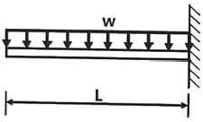
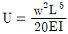
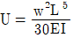
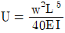
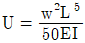
(정답률: 54%)
39. 판 두께 3mm를 사용하여 내압 20kN/cm2을 받을 수 있는 구형(spherical) 내압용기를 만들려고 할 때, 이 용기의 최대 안전내경 d를 구하면 몇 cm인가? (단, 이 재료의 허용 인장응력을 σw=800kN/cm2으로 한다.)
- 24
- 48
- 72
- 96
(정답률: 7%)
40. 지름 70mm인 환봉에 20MPa의 최대전단응력이 생겼을 때 비틀림모멘트는 약 몇 kNㆍm인가?
- 4.50
- 3.60
- 2.70
- 1.35
(정답률: 29%)
3과목: 용접야금
41. 용접 중에 발생한 기포가 응고 시에 배출되지 못하고 잔류한 것은?
- 편석
- 기공
- 은점
- 선상조직
(정답률: 79%)
42. 용착금속의 응고 과정에 대한 설명으로 옳은 것은?
- 강의 다층용접에서는 앞의 층이 다음 층의 열에 의해 재가열되므로 주조조직이 거칠어진다.
- 용융금속 내에서는 냉각할 때 전방측면부터 응고가 시작하여 결정이 측면으로 성장한다.
- 최초로 응고하는 것은 비교적 불순물이 많은 강이 된다.
- 최후로 응고하는 중앙상부에는 비교적 많은 불순물이 존재하게 된다.
(정답률: 65%)
43. 비중이 작은 것에서 큰 순서대로 나열된 것은?
- Al ＜ Sn ＜ Cu ＜ Pb
- Sn ＜ Cu ＜ Pb ＜ Al
- Cu ＜ Pb ＜ Al ＜ Sn
- Pb ＜ Cu ＜ Sn ＜ Al
(정답률: 82%)
44. 다음 중 피복아크용접에서 탈산제로 사용되지 않는 것은?
- Mn
- Si
- Ti
- Cu
(정답률: 65%)
45. 용접 작업 후 용접비드와 모재 사이에 생성되는 영역은?
- 칠영역
- 열영향부
- 용착금속
- 수지상영역
(정답률: 65%)
46. 용접 슬래그의 염기도 표시로 옳은 것은? (단, A=산성 성분의 총합, B=염기성 성분의 총합, As=용접 슬래그의 염기도)
- As = B/A
- As = A/B
- As = (B-A)/A
- As = (A-B)/B
(정답률: 50%)
47. 서브머지드 아크 용접에서 사용하는 용제의 구비조건으로 틀린 것은?
- 용접 후 슬래그 이탈성이 좋을 것
- 탈산, 탈황 등의 정련작용이 발생하지 않을 것
- 아크 발생을 안정시켜 안정된 용접을 할 수 있을 것
- 적당한 점성을 가지고 있어 양호한 비드를 얻을 수 있을 것
(정답률: 74%)
48. 강력한 탈산제를 첨가하여 충분히 탈산시킨 강괴로 고합금강의 제조에 사용되는 것은?
- 킬드강
- 캡드강
- 림드강
- 세미킬드강
(정답률: 60%)
49. 용융합금이 냉각하여 일정한 온도에서 서로 다른 두 종류의 고상이 동시에 정출되는 현상은?
- 공정 반응
- 공석 반응
- 포정 반응
- 편석 반응
(정답률: 57%)
50. 체심입방격자(BCC)에 대한 설명으로 옳지 않은 것은?
- 원자충진율은 68%이다.
- 배위수는 8, 격자 내 원자수는 2개이다.
- Mg, Zn, Ti, Cd, Zr은 BCC 결정구조이다.
- 면심입방격자보다 전연성은 작다.
(정답률: 85%)
51. 용접구조물의 제작 시 예열의 목적이 아닌 것은?
- 용접 시 발생하는 변형을 경감시킨다.
- 용접구조물의 잔류 응력을 경감시킨다.
- 용접구조물의 비드 밑 균열을 방지시킨다.
- 임계온도를 통과, 냉각될 때 냉각속도를 빠르게 한다.
(정답률: 80%)
52. 용융금속 내 가스의 용해량을 설명한 법칙은?.
- 깁스의 법칙
- 포아송의 법칙
- 영의 법칙
- 시버트 법칙
(정답률: 62%)
53. 마우러 조직도에서는 어떤 성분을 기준으로 조직을 구분하는가?
- 탄소와 구리
- 탄소와 규소
- 탄소와 황
- 탄소와 인
(정답률: 72%)
54. 다음 중 철강소재에서 오스테나이트를 안정화시키는데 효과가 가장 큰 원소는?
- Zn
- C
- Cu
- Ni
(정답률: 54%)
55. 알루미늄 합금이나 구리 합금의 예열온도로 가장 적당한 온도범위는?
- 40 ~ 75℃
- 80 ~ 150℃
- 200 ~ 300℃
- 400 ~ 550℃
(정답률: 67%)
56. 다음 중 금속에서 발생하는 전위 형태와 가장 거리가 먼 것은?
- 칼날전위
- 나선전위
- 탄성전위
- 혼합전위
(정답률: 46%)
57. Fe-C 평형상태도에서 공정점의 탄소량은 약 몇 %인가?
- 0.025
- 0.8
- 2.1
- 4.3
(정답률: 31%)
58. 두 가지 이상의 금속 원소가 간단한 원자비로 결합되어 있는 물질로 MgCu2와 같은 물질을 무엇이라고 하는가?
- 비금속개재물
- 전기적화합물
- 금속간화합물
- 전율고용체
(정답률: 65%)
59. 18%Cr-8%Ni 스테인리스강에서 입계부식을 방지하는 방법으로 틀린 것은?
- 템퍼링을 실시한다.
- 용체화 처리를 한다.
- 탄소함량을 낮춘다.
- 탄화물의 안정화 원소를 첨가한다.
(정답률: 77%)
60. 금속을 가공하면 전위밀도가 증가하여 전위의 이동이 어렵게 되는 현상은?
- 가공경화
- 크리프
- 전위크랙
- 피로현상
(정답률: 67%)
4과목: 용접구조설계
61. 다음 중 열전도율이 가장 낮은 것은?
- 연강
- 구리
- 알루미늄
- 스테인리스강
(정답률: 74%)
62. 저온 및 고온 균열에 관한 내용으로 옳은 것은?
- 설퍼 크랙(sulfur crack)은 저온 균열이다.
- 약 200°C 이하에서 발생하는 균열은 저온균열이다.
- 고온 균열은 용접금속이 응고 후 48시간 이내에 발생하는 균열이다.
- 고온 균열은 수축응력이나 열 변형에 의한 응력집중 등의 원인으로 인하여 발생하는 균열이다.
(정답률: 67%)
63. 서브머지드 아크 용접에서 균열이 발생하는 원인으로 가장 거리가 먼 것은?
- 열영향부가 서랭되었다.
- 모재 성분에 편석이 있다.
- 모재에 탄소(C)양이 많았다.
- 용착금속의 Mn양이 적었다.
(정답률: 82%)
64. 용접부에 발생하는 토 균열(Toe crack)의 방지대책으로 가장 적합한 것은?
- 비드단면 형태의 나비 대 깊이의 비를 1:1~1:1.4 이상 크게 유지하여야 한다.
- 언더컷이 생기지 않는 용접을 해야 하며, 예열을 하거나 강도가 낮은 용접봉을 사용한다.
- 용접부에 들어가는 수소량을 가능한 적게 하고, 일단 들어간 수소를 신속히 방출시키는 대책을 수립한다.
- 저온 균열과 마찬가지로 수소량 억제 등을 꾀하는 동시에 부재의 회전변형을 구속해주거나 패스수를 적게 한다.
(정답률: 69%)
65. 용접 설계 및 시공에서 용접구조물의 피로강도를 향상시키기 위한 방법과 가장 거리가 먼 것은?
- 완전 용입이 되도록 용접을 할 것
- 열 또는 기계적 방법으로 잔류응력을 완화시킬 것
- 구조물 주요부위에 용착량을 늘려 응력이 집중되게 할 것
- 표면 가공 또는 표면 처리 등에 의한 단면이 급변하는 부분이 없게 할 것
(정답률: 82%)
66. 방사선 투과검사에서 방사선원으로 사용되지 않는 것은?
- Be 478
- Tm 170
- Cs 137
- Ir 192
(정답률: 65%)
67. 중판 이상의 두꺼운 판의 용접을 위한 홈 설계 시 고려해야할 사항으로 틀린 것은?
- 루트 반지름은 가능한 작게 한다.
- 홈의 단면적은 가능한 작게 한다.
- 적당한 루트 면과 루트 간격을 만들어 준다.
- 최소 10°정도는 전후좌우로 용접봉을 움직일 수 있는 홈 각도가 필요하다.
(정답률: 69%)
68. 용접부의 충격시험은 다음 중 어느 것을 알기 위한 시험인가?
- 인성
- 균열
- 전단
- 파단
(정답률: 50%)
69. 피복 아크 용접에서 아크 전류 300A, 아크전압 30V, 용접속도 10cm/min 일 때 용접의 단위길이 1cm당 발생하는 용접 입열은 몇 Joule/cm 인가?
- 540
- 5400
- 54000
- 540000
(정답률: 72%)
70. 열적구속도시험이라고도 하며 열의 흐름을 두 방향이나 세 방향으로 하여 비드에 발생하는 균열을 검사하는 시험은?
- T형 필릿 균열시험
- 리하이(Lehigh) 구속 균열시험
- 휘스코 균열시험(Fisco cracking test)
- CTS 균열시험(controlled thermal severity test)
(정답률: 54%)
71. 저수소계 피복 아크 용접봉에 대해 설명한 것 중 틀린 것은?
- 석회석이나 형석을 주성분으로 사용한다.
- 아크가 약간 불안정하고 용접 시점에서 기공이 발생하기 쉽다.
- 용접금속 중에 수소량은 적지만 산소량이 많아 균열 감수성이 높다.
- 구속이 큰 중구조물, 고장력강, 유황 함유량이 높은 강 등의 용접에 적합하다.
(정답률: 39%)
72. AW-400인 용접기 11대를 설치하고자 할 때 전원 변압기는 어느 정도 용량을 설치하는 것이 가장 적당한가? (단, 용접기의 평균전류는 200A, 무부하전압은 70V, 사용률은 50% 이다.)
- 39kVA
- 77kVA
- 88kVA
- 104kVA
(정답률: 31%)
73. 다음 보기가 설명하고 있는 용접 이음 홈 형상은?
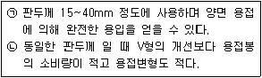
- Z형 홈
- X형 홈
- I형 홈
- A형 홈
(정답률: 80%)
74. 용접균열의 발생위치에 따른 분류가 아닌 것은?
- 용접금속
- 열영향부
- 용접변형부
- 모재의 원질부
(정답률: 42%)
75. 코발트 60(Co60)에서 방출되는 것 중 비파괴검사에서 사용되는 것은?
- X-선
- 알파선
- 베타선
- 감마선
(정답률: 47%)
76. 용접물을 정반에 고정시키거나 보강재 또는 일시적인 보조판을 붙여 변형을 방지하는 방법으로 가장 널리 사용되는 용접변형방지법은?
- 억제법
- 교호법
- 피닝법
- 탄성 역변형법
(정답률: 82%)
77. 용접이음의 강도와 파괴에서 시간 의존성 파괴가 아닌 것은?
- 피로
- 크리프
- 취성 파괴
- 응력 부식 균열
(정답률: 39%)
78. 용접변형의 종류 중 면내 변형에 속하지 않는 것은?
- 회전 변형
- 좌굴 변형
- 횡 수축 변형
- 종 수축 변형
(정답률: 39%)
79. 잔류응력이 존재하는 구조물에 인장이나 압축하중을 주어 용접부를 약간 소성 변형시킨 후 하중을 제거하여 응력을 완화하는 방법은?
- 노내 풀림법
- 국부 응력 제거법
- 저온 응력 완화법
- 기계적 응력 완화법
(정답률: 65%)
80. 두께 6mm의 얇은 판으로 내부 압력을 받는 용기의 동체를 제작할 경우 동체의 직경이 50mm 이고, 내부압력이 100N/mm2 일 때 동체에 작용하는 응력은?
- 41.7N/mm2
- 60N/mm2
- 208.3N/mm2
- 416.7N/mm2
(정답률: 31%)
5과목: 용접일반 및 안전관리
81. AW-300 용접기를 사용하여 용접을 할 때 용접 입열량은 18000 J/cm, 아크전압 30V, 무부하전압 90V, 용접속도 15cm/min이었다면 이때의 용접 전류 값은 얼마인가?
- 100A
- 150A
- 200A
- 220A
(정답률: 47%)
82. 직류 용접기에 고주파 발생장치를 병용했을 때의 사항으로 옳은 것은?
- 전격위험이 크다.
- 아크 손실이 크다.
- 아크 발생이 쉽다.
- 무부하 전압이 높다.
(정답률: 87%)
83. 아세틸렌 용기의 밸브는 일반적으로 전용핸들을 이용하여 몇 회전 정도 열어서 사용하면 좋은가?
- 0.5회전
- 1.5회전
- 2회전 이상
- 완전히 연다.
(정답률: 62%)
84. MIG용접기의 제어장치 기능 중 크레이터처리 기능에 의해 낮아진 전류가 서서히 줄어들면서 아크가 끊어지는 기능으로 이면용접부가 녹아내리는 것을 방지하는 것은?
- 스타트 시간(start time)
- 버언 백 시간(burn back time)
- 예비 가스 유출 시간(preflow time)
- 가스 지연 유출 시간(post flow time)
(정답률: 73%)
85. 전원이 없는 야외에서 차축이나 레일의 접합을 위해 사용하는 용접법은?
- 업셋 용접
- 테르밋 용접
- 가스 압접법
- 일렉트로 슬래그 용접
(정답률: 80%)
86. 다음 중 전격의 방지대책으로 틀린 것은?
- 용접기의 내부에 함부로 손을 대지 않는다.
- 홀더나 용접봉은 맨손으로 취급하지 않는다.
- 용접작업을 끝냈을 때나 장시간 중지할 때는 스위치를 차단시킬 필요가 없다.
- 땀, 물 등에 의해 습기찬 작업복, 장갑, 구두 등을 착용하고 작업하지 않는다.
(정답률: 80%)
87. 다음 용접법 중 압접에 속,하는 것은?
- 가스 용접
- 마찰 용접
- 스터드 용접
- 피복 아크 용접
(정답률: 70%)
88. 피복 아크 용접에서 직류 역극성(DCRP)의 특징으로 틀린 것은?
- 비드 폭이 좁다.
- 모재의 용입이 얕다.
- 용접봉 녹음이 빠르다.
- 박판, 주철, 비철금속의 용접에 쓰인다.
(정답률: 62%)
89. 피복 아크 용접봉의 피복제 중에서 슬래그생성제가 아닌 것은?
- 산화철
- 산화티탄
- 페로망간
- 이산화망간
(정답률: 69%)
90. 피복 아크 용접봉의 심선으로 사용되는 것은?
- 저탄소강
- 고장력강
- 저탄소림드강
- 고탄소림드강
(정답률: 67%)
91. 이음 형상에 따른 저항 용접의 분류에서 겹치기 용접에 속하는 것은?
- 업셋 용접
- 플래시 용접
- 퍼커션 용접
- 프로젝션 용접
(정답률: 47%)
92. 일반적인 플라스마 아크 용접의 특징으로 틀린 것은?
- 무부하 전압이 높다.
- 용접부의 변형이 적다.
- 용접부의 기계적 성질이 좋다.
- 용접속도가 느리고 용입이 얕다.
(정답률: 80%)
93. 가스용접에서 팁 끝이 순간적으로 막히면 가스의 분출이 나빠지고 토치의 가스혼합실까지 불꽃이 그대로 도달되어 토치가 빨갛게 달구어지는 현상을 무엇이라 하는가?
- 역화
- 진화
- 인화
- 역류
(정답률: 60%)
94. 비교적 큰 용적이 단락되지 않고 옮겨가는 형식이며, 서브머지드 아크 용접과 같이 대전류 사용시에 나타나며, 일명 핀치효과형이라고 불리는 용적 이행 형태는?
- 미세형(micro type)
- 스프레이형(spray type)
- 단락형(short circuit type)
- 글로블로형(globular type)
(정답률: 67%)
95. 일렉트로 가스 아크 용접의 특징으로 옳은 것은?
- 용접장치가 간단하며 취급이 쉽다.
- 용접 시 판두께가 얇을수록 경제적이다.
- 용접 작업 시 바람의 영향을 받지 않는다.
- 용접홈의 기계가공이 필요하며, 가스절단상태로 용접할 수 없다.
(정답률: 50%)
96. 절단을 가스절단과 아크 절단으로 분류할 때 가스절단에 속하는 것은?
- 분말 절단
- 아크 에어 가우징
- 플라스마 제트 절단
- 불활성 가스 아크 절단
(정답률: 50%)
97. 무색, 무미, 무취의 인체에 해가 없는 가스로, 수중 절단에 주로 사용되는 것은?
- 부탄 가스
- 수소 가스
- 프로판 가스
- 아세틸렌 가스
(정답률: 80%)
98. 화재의 종류 중 종이, 목재, 석탄 등이 연소 후에 재를 남기는 일반화재를 나타내는 것은?
- A급 화재
- B급 화재
- C급 화재
- D급 화재
(정답률: 87%)
99. 콘덴서에 미리 저축된 전기 에너지를 짧은 시간에 급속 방전시켜 발생하는 아크에 의해 접합부를 충격적으로 압력을 가하여 접합하는 용접 방법은?
- 점(spot) 용접
- 플래시(flash) 용접
- 돌기(projection) 용접
- 퍼커션(percussion) 용접
(정답률: 25%)
100. 원판상의 롤러 전극 사이에 2장의 강판을 겹쳐 놓고 가압 통전하면서 전극을 회전시켜 연속 접합하는 용접법은?
- 심 용접
- 업셋 용접
- 플래시 용접
- 프로젝션 용접
(정답률: 70%)